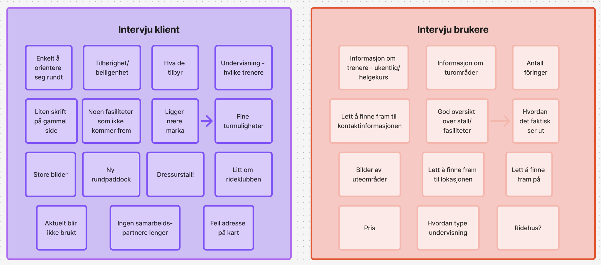
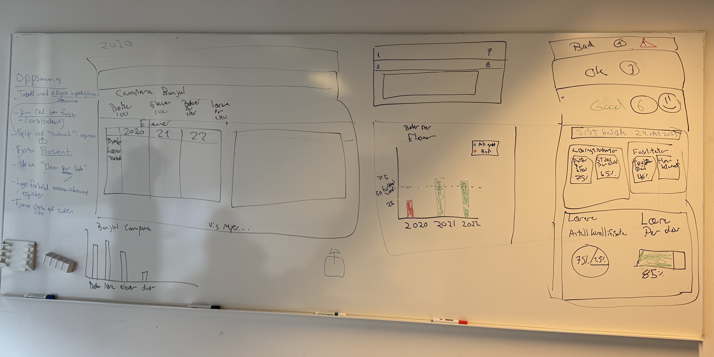
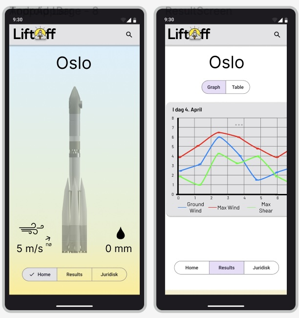

MSc Informatikk:
design, bruk og interaksjon
Universitetet i Oslo
Fornye nettsiden for å få bedre oversikt og enklere navigasjon

Den eksisterende nettsiden inneholdt mye informasjon, men den var uoversiktlig og utdatert. Målet mitt var derfor å gjøre det enklere for potensielle kunder å forstå hva Tanum Ridesenter tilbyr og finne informasjonen de trenger.
Dette var et selvstendig kundeprosjekt hvor jeg hadde ansvar for hele prosessen: research, informasjonsarkitektur, UX/UI-design, prototyping, brukertesting og utvikling i HTML, CSS og JavaScript.
Å finne ut av hva som kunne fjernes uten at kunden opplevde at viktig informasjon gikk tapt. I tillegg var det litt vanskelig å balansere brukernes behov med klientens ønsker. I intervjuene kom det blant annet frem at brukerne ønsket tydelig prisinformasjon på nettsiden, mens klienten ikke ønsket å publisere priser. Jeg måtte derfor prioritere innhold som svarte på brukernes behov og samtidig samsvarte med klientens ønsker.
Prosjektet lærte meg hvor stor forskjell prioritering av informasjon kan gjøre. Jeg lærte også verdien av å teste en eksisterende løsning før jeg begynner å redesigne den. Det ga meg et konkret sammenligningsgrunnlag og gjorde det lettere å begrunne designvalgene mine overfor kunden.



Et verktøy for å prioritere skolebesøk og gjøre tidligere inspeksjonsdata enklere å bruke.

Skoleinspektører måtte kunne få oversikt over hvilke skoler som burde prioriteres for oppfølging, samtidig som de hadde behov for å se tidligere inspeksjoner og relevant skoledata på en forståelig måte. Arbeidet kunne også foregå i områder med ustabil eller manglende internettilgang, noe som stilte krav til hvordan løsningen måtte fungere i praksis.
Research, UX/UI-design, wireframing og interaktiv prototyping i Figma, brukertesting og front-end i React/DHIS2.
Vi hadde ingen «ordentlige» brukere fra målgruppen tilgjengelig i prosjektet. Personasene er derfor antakelsesbaserte og ble utviklet fra prosjektbeskrivelsen vi fikk utdelt, ikke fra intervjuer med skoleinspektører. Testene med venner og medstudenter ga nyttig innsikt i forståelighet, navigasjon og visuell tydelighet, men kunne ikke validere den reelle arbeidshverdagen eller behovene til målgruppen.
En sentral utfordring var å unngå information overload. Løsningen inneholdt store mengder tall og inspeksjonsdata, og dersom alt ble vist samtidig, ble det vanskelig å forstå hva som var viktigst. Vi måtte derfor prioritere informasjonen vi mente inspektørene trengte først, og presentere den gjennom tydelige statusnivåer. Mer detaljert informasjon ble gjort tilgjengelig ved å klikke seg videre.
Prosjektet lærte meg hvor viktig det er å bruke tid på å forstå datagrunnlaget før man begynner å designe. I DHIS2 var det store mengder data som potensielt kunne være relevant, og en viktig del av designarbeidet ble derfor å vurdere hva brukeren faktisk trenger å se – og hva som kan skjules eller nedprioriteres.
En DHIS2-app som samler planlegging, prioritering, inspeksjonshistorikk og rapportering i én arbeidsflyt. Tydelige statusnivåer gjør det raskere å forstå hvilke skoler som trenger oppfølging og hvorfor. Offline-funksjonen gjør det mulig å fortsette arbeidet og redusere risikoen for tap av data når nettforbindelsen er ustabil.



Utforsking av hvordan masterstudenter kan jobbe mer effektivt og opprettholde motivasjon gjennom deltakende design.

Vi utforsket hvordan masterstudenter kan jobbe mer effektivt og opprettholde motivasjon. Problemdefinisjonen var ikke fastsatt på forhånd, men utviklet seg gjennom prosjektet etter hvert som deltakerne delte erfaringer, identifiserte utfordringer og utviklet ideer sammen med oss.
Jeg var UX-designer og fasilitator i et team på tre. Jeg bidro til å planlegge og gjennomføre workshopene, analysere innsikt og ferdigstille prototypen. Rollen handlet om å gi struktur og støtte uten å styre deltakerne mot løsninger vi allerede hadde bestemt.
Deltakerne var masterstudenter ved UiO fra design, psykologi og digitalisering i helsesektoren. Et spørreskjema med QR-kode ga få svar, så vi gikk over til lavterskel rekruttering og kommunikasjon gjennom Messenger, med noe ad hoc-rekruttering før første og siste workshop.
Det var vanskelig å opprettholde den samme deltakelsen gjennom hele prosjektet, og flere deltok bare i én workshop. Den korte tidsrammen begrenset også hvor mange aktiviteter og iterasjoner vi kunne gjennomføre. Dette kan ha påvirket deltakernes mulighet til å ha en tydelig stemme i alle beslutningene.
Den største utfordringen for meg var å gi slipp på deler av den vanlige UX-designerrollen. I stedet for å samle innsikt og selv omsette den til en løsning, måtte jeg la deltakerne definere problemer, utvikle ideer og ta aktive beslutninger. Jeg måtte balansere det å styre workshopen med å gi rom for utforskning. Prosjektet lærte meg forskjellen mellom å designe for mennesker og å designe med dem.
Prosessen resulterte i et konsept for en motivasjonsapp bygget på deltakernes egne behov, valg og prototyper. Løsningen kombinerer personlige mål og visuell fremgang med felles pauser og sosial støtte, og ble ferdigstilt som en high-fidelity-prototype i Figma.


En interaktiv installasjon som holdes «i live» av publikums stemmer.


Sustained by Voices er en interaktiv installasjon som utforsker puls som en midlertidig og betinget tilstand. Installasjonen består av en skjør, menneskelignende skikkelse som bare holdes «i live» så lenge publikum prater til den.
Prosjektet ble utviklet i et team med utgangspunkt i temaet «puls». Installasjonen var ikke laget for én bestemt brukergruppe, men for en interaktiv utstilling der mange mennesker skulle kunne møte og påvirke installasjonen.
En mikrofon registrerer lydnivået rundt installasjonen. Når noen snakker eller lager lyd, sendes signalet til en Arduino som styrer en motor. Motoren løfter og senker skikkelsen slik at den ser ut til å være i live. Når lyden forsvinner, faller installasjonen ned i en sammenkrøket posisjon.
Publikums stemmer blir en avgjørende faktor for at skikkelsen skal holdes «i live». Interaksjonen undersøker hvor lenge mennesker er villige til å gi oppmerksomhet og energi til noe som ikke kan opprettholdes for alltid.
En sentral utfordring var å begrense konseptet. Det var lett å ønske flere funksjoner, men for mange elementer gjorde sammenhengen mellom lyd og bevegelse mindre tydelig.


App for å vurdere værforhold ved rakettoppskytning — i samarbeid med Portal Space

Portal Space manglet én løsning som samlet værdataene de trenger for å vurdere en trygg rakettoppskytning. Vi utviklet derfor LiftOff, en app som kombinerer blant annet sikt, nedbør, luftfuktighet og vind ved ulike høyder og presenterer informasjonen i en mer oversiktlig beslutningsstøtte.
Jeg hadde rollen som designer og front-end-utvikler i et tverrfaglig team på seks. Jeg bidro gjennom hele prosessen med intervju, kravprioritering, workshops, interaktiv prototyping i Figma, brukertesting og utvikling av brukergrensesnittet i Kotlin og Jetpack Compose.
Teamet besto av studenter fra design, robotikk, programmering og språkteknologi. Vi jobbet i ukentlige sprinter og brukte workshops, parprogrammering og mobbprogrammering for å dele kunnskap og ta beslutninger sammen. Prosjektet lærte meg hvor avgjørende tydelig arbeidsfordeling, regelmessige møter og åpen kommunikasjon er i et tverrfaglig team.
LiftOff samler værdata fra flere kilder og gir en tydelig anbefaling: grønt, gult eller rødt lys for oppskytning. Brukeren kan velge lokasjon, finne neste gode oppskytningstidspunkt, undersøke data i tabell eller graf og justere egne grenseverdier og marginer.
Resultatet ble en responsiv Android-app der de fleste testdeltakerne opplevde grensesnittet som intuitivt og oversiktlig. Testing med målgruppen og en deltaker med rød-grønn fargeblindhet gjorde løsningen tydeligere og mer tilgjengelig.
Jeg ville planlagt testingen av den kodede løsningen tidligere, slik at teamet fikk mer tid til en ekstra testrunde. Jeg ville også etablert tydeligere arbeidsfordeling og kortere, mer fokuserte workshops fra starten.


